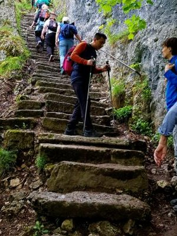
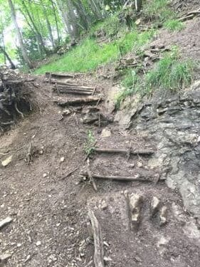
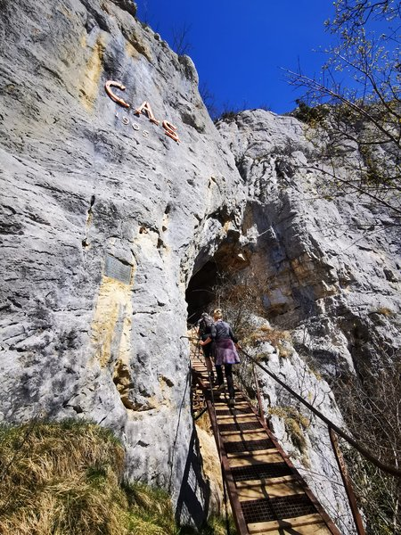
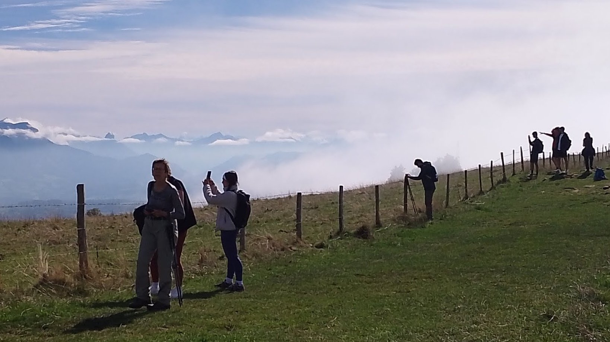

Située en France voisine, la 'montagne des Genevois' attire les randonneurs depuis des siècles. Elle offre des vues exceptionnelles sur Genève et les Alpes.
Il y a une magnifique webcam sur le téléphérique ↗
avec des images toutes les 10 minutes.
Les sentiers
Il y a une multitude de sentiers pour randonner au Salève. L'AGAS ne propose que les chemins officiels (balisés)
ne pas dépassant le niveau T2 selon les
cotations du Club Alpin Suisse ↗. Pour la montée depuis Veyrier, l'AGAS propose essentiellement 3 sentiers:

▲ Pas de l'Echelle:
2 heures jusqu'au téléphérique (moyennement difficile)

▲ Grande Gorge:
3 heures, relativement raide par endroits (difficile)

▲ Sentier d'Orjobet:
4 heures, passant par la grotte d'Orjobet (difficile)
Pour le retour à pied comptez environ un tiers de temps en moins que pour la montée. Si vous êtes fatigués, vous pouvez descendre
en téléphérique ↗. Et ceux qui n'ont pas besoin de retourner à Veyrier continuent souvent par la crête pour descendre à Croix-de-Rozon (bus 82 et 44 vers Genève).
Dans ce cas, nous sommes normalement en bas entre 16h et 17h.

▲ Il y a de belles vues depuis la crête (une heure de traversée, facile)
Suivant la demande, la météo, le niveau des marcheurs et la disponibilité des bénévoles,
nous proposons d'autres itinéraires depuis Veyrier, ou même depuis un autre départ. Les détails sont
confirmés 1-2 jours avant. Un dessin des chemins que nous avons parcourus en 2025 se trouve
à la fin de notre rapport annuel.
Liens utiles
Pour savoir plus sur le Salève, regardez ici:
- Le
Syndicat Mixte du Salève ↗, qui regroupe 19 communes, maintient les
chemins de randonnée. Vous pouvez signaler toute observation par
l'appli suricate.
- La Salévienne ↗ est une
société d'histoire régionale du Salève, du Vuache et du sud du canton de Genève. C'est
elle qui a placé les médailles "Genius Loci" qu'on voit un peu partout
au Salève et créé le contenu numérique qui s'affiche quand on scanne les QR Codes.
Si vous désirez randonner ailleurs qu'au Salève, nous vous recommandons:
- Oxygène 74
↗, association affiliée à la FFRP (Fédération Française de la Randonnée Pédestre).
Ils randonnent en Haute-Savoie et dans le Jura et ils offrent aussi des sorties de marche nordique.
Sur inscription préalable, déplacements en covoiturage. Possibilité de participer à la journée.
- Genève Rando ↗, l'organisation cantonale de randonnée affiliée a Suisse Rando.
Elle propose chaque année une centaine de
randonnées accompagnées ↗ dans le canton de Genève, en Suisse romande et en France voisine.
Déplacements en transports en commun (bus, train). Sur inscription préalable, possibilité de participer à l'essai
sans être membre. Information for English
speakers ↗